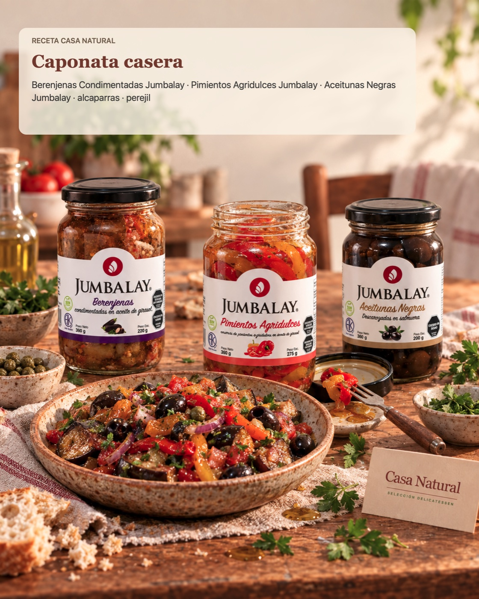

Qué necesitás
- Berenjenas condimentadas Jumbalay
- Pimientos agridulces Jumbalay
- Aceitunas negras Jumbalay
- Alcaparras
- Perejil
Usá las cantidades que necesites según los comensales y ajustá las conservas a tu gusto.
Cómo prepararlo
- Escurrí las conservas y cortá las berenjenas y los pimientos en bocados.
- Mezclá con las aceitunas y las alcaparras.
- Terminá con perejil picado. Serví fría o entibiá suavemente para acompañar una comida.